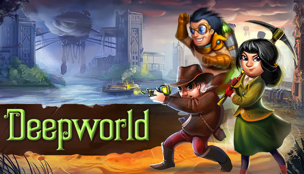
Explore the Wiki
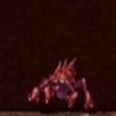
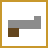
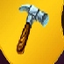
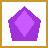
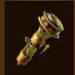
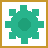
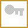
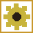
The original Deepworld servers shut down in 2019. The community has kept the game alive through:
- Brainwine — An open-source private server (github.com/kuroppoi/brainwine)
- Community Revival Server — A new server with a custom Windows client
- Active Discord — Community coordination and updates
 Biomes
Biomes
Deepworld features 7 distinct biomes, each with unique resources, enemies, environmental mechanics, and terrain. Worlds generate with a specific biome type that determines what you'll find.
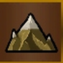
Temperate
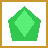
Green Crystals,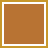
Copper, Iron,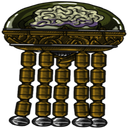
Brains,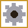
Automata, TerrapusTemperate
The default starter biome with grassy terrain, trees, and varied underground ores. New worlds start with acid rain at 100% acidity. As you find all 8 Purifier parts and assemble the Purifier, acid rain converts to normal rain, and the biome becomes lush enough for flowers and bulbs to grow.
Mushrooms (8 types)
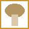
Portabella,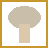
Oyster,Environment
Acid rain damages players without  Exo-skin protection. The Purifier machine (8 parts found in green crates) neutralizes the acid rain when assembled. After purification, flowers and plants begin to grow naturally.
Exo-skin protection. The Purifier machine (8 parts found in green crates) neutralizes the acid rain when assembled. After purification, flowers and plants begin to grow naturally.
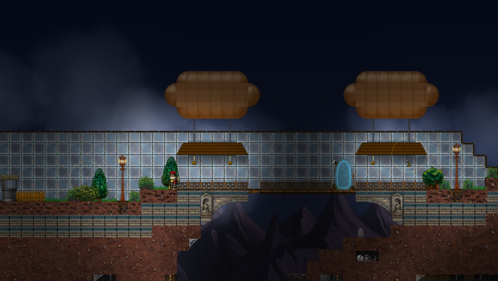
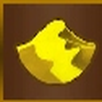
Desert
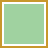
Beryllium,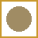
Armadillos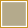
Pterodactyl,Desert
A barren biome where cacti replace trees and sandstone ruins dot the landscape. The desert has a dehydration mechanic — a Hydration bar that depletes over time. Players must carry and use Jars of Water to stay hydrated.
Exclusive Resource: Beryllium
Beryllium ore is found only in Desert biomes and is required for crafting
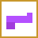
Energy weapons, weapon upgrade kits, and other advanced items.Mushrooms
Portabella, Oyster,  Porcini, Chanterelle,
Porcini, Chanterelle,  Morel, Acid,
Morel, Acid,  Anbaric Mushroom
Anbaric Mushroom
Unique Creatures
The desert is home to Scorpions, Large Scorpions,  Sand Worms, and the friendly Armadillo.
Sand Worms, and the friendly Armadillo.
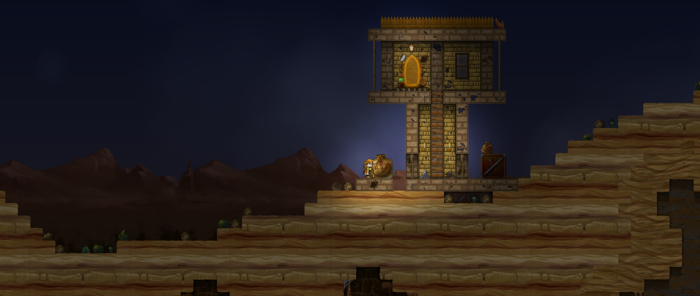
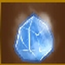
Arctic
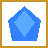
Blue Crystals,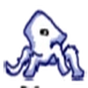
Frost TerrapusArctic
A barren frozen biome with no trees and scattered ruins. The cold mechanic drains the player's warmth — without an  Exo-skin, players lose HP over time. Arctic biomes are the only source of
Exo-skin, players lose HP over time. Arctic biomes are the only source of  Diamond ore and contain
Diamond ore and contain  Onyx deposits.
Onyx deposits.
Exclusive Resources
 Diamonds are found only in Arctic biomes and are essential for Diamond-tier tools, weapons, and the Diamond Weapon Kit.
Diamonds are found only in Arctic biomes and are essential for Diamond-tier tools, weapons, and the Diamond Weapon Kit.
Special Bunkers
The Arctic has unique bunker types: Ice Sculpture Bunkers containing ice sculptures, and Present/Candy Cane Bunkers with candy canes, presents, and unique seasonal loot.
Mushrooms
Portabella, Oyster,  Porcini, Chanterelle, Arctic Mushroom
Porcini, Chanterelle, Arctic Mushroom
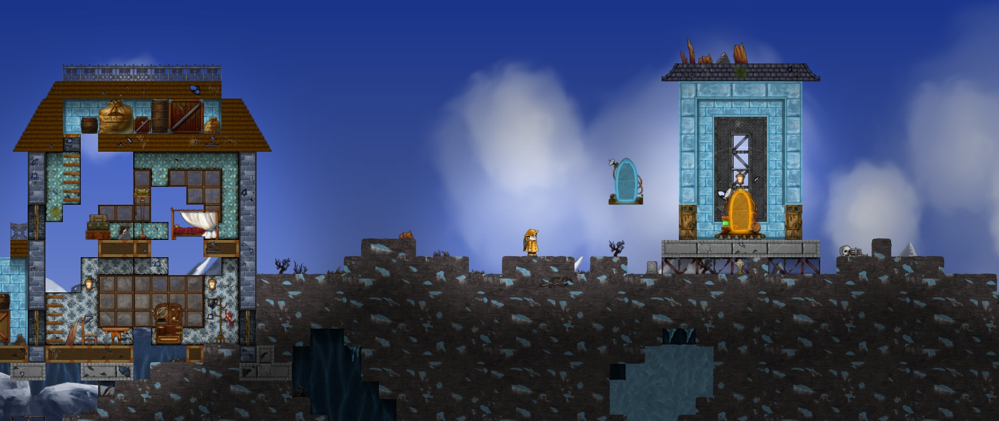
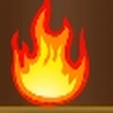
Hell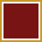
Bloodstone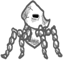
Skeleton Terrapus,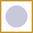
GhostsHell
A fire-themed biome filled with magma and hazards. The  Expiator machine is unique to this biome — it consists of 8 parts that must be found and assembled, similar to the Purifier. Skeleton Terrapus are the primary enemy here, immune to most weapon types. The biome contains Bloodstone as a resource.
Expiator machine is unique to this biome — it consists of 8 parts that must be found and assembled, similar to the Purifier. Skeleton Terrapus are the primary enemy here, immune to most weapon types. The biome contains Bloodstone as a resource.
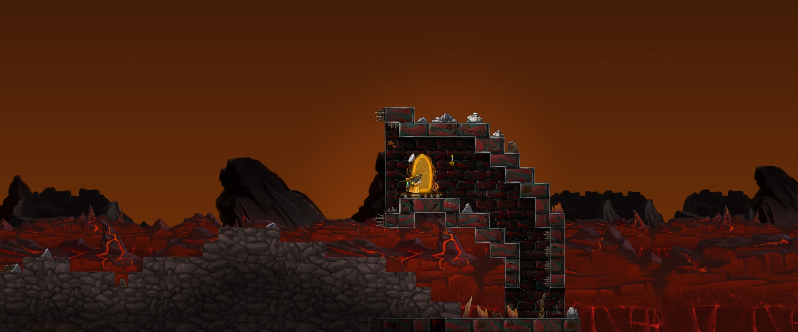
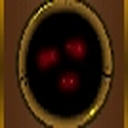
DeepDeep
An underground biome shrouded in darkness. Flashlights and light sources are essential for navigation. The Deep biome features unique underground terrain and resource deposits.
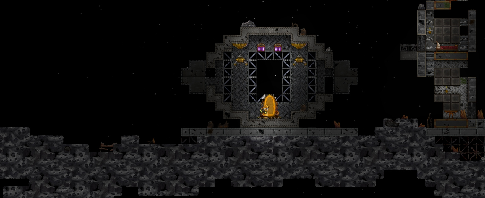
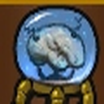
BrainBrain
The homeland of the
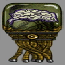
Brain creatures. This biome is populated primarily by Baby Brains and other Brain variants. It serves as the origin point for Deepworld's most iconic enemy faction.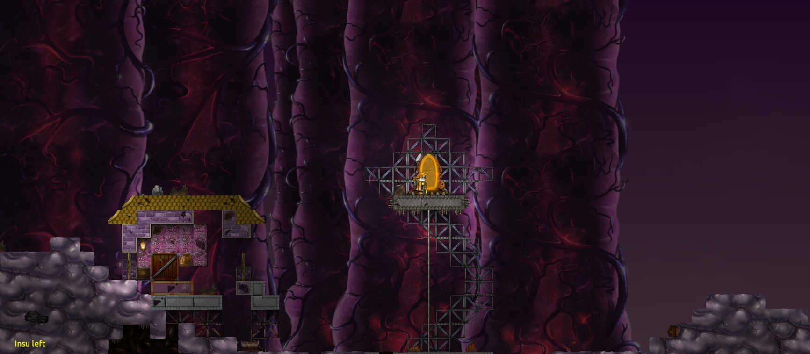
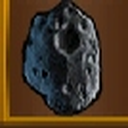
SpaceSpace
The Space biome was released as a major Christmas update. It is the exclusive source of  Platinum ore, used to craft the highest tier of tools:
Platinum ore, used to craft the highest tier of tools:  Platinum Pickaxe, Platinum Shovel, Platinum Spade, and Platinum Net.
Platinum Pickaxe, Platinum Shovel, Platinum Spade, and Platinum Net.
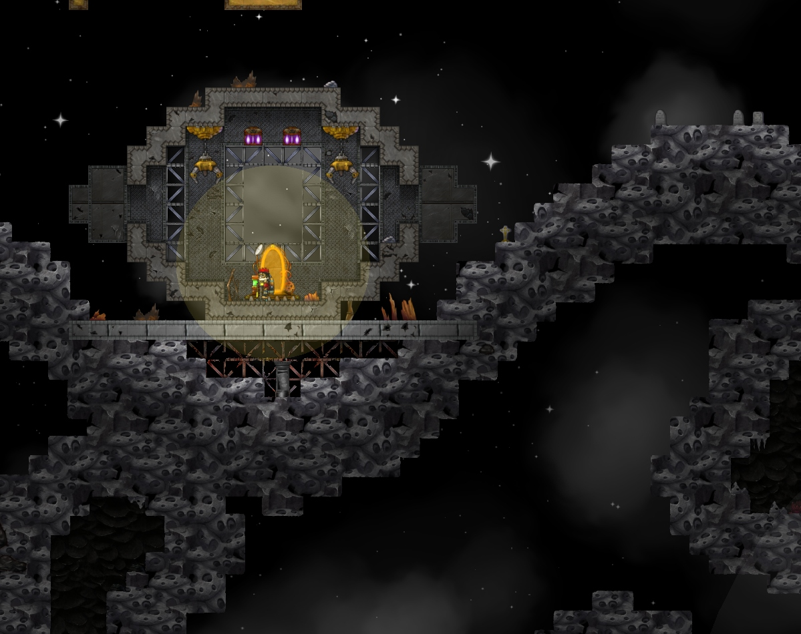
Mobs & Creatures
Deepworld is populated with a variety of hostile, neutral, and friendly creatures. Each mob has specific stats, behaviors, and biome spawns. Click any card to jump to its full details.
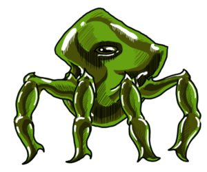
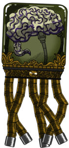
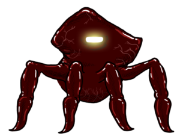
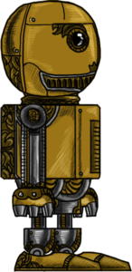
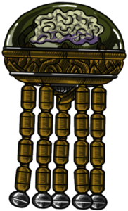
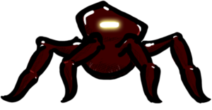
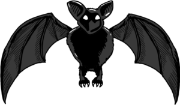
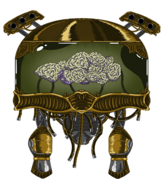
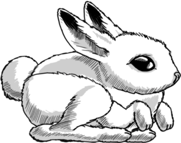
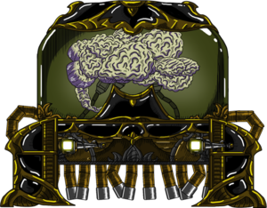
Acid Terrapus
Overview
The Acid Terrapus is a more capable breed of the Adult Terrapus, characterized by slimy green skin and the ability to fire acid projectiles. They are found at lower depths near acid pools and occur most abundantly in brain biomes, attacking players on sight.
Combat Tips
Acid Terrapi are immune to Acid Cannon attacks, so use a different weapon. If retreat is preferable, dig twisting tunnels through dirt to confuse the Terrapus and make a quick escape.
Adult Brain
Overview
Adult Brains are the second tier of hostile brains, appearing frequently in the lower underground. They have shields that repel melee attacks and one random additional attack type, so fighting multiple at once may require switching weapons to damage them all.
Combat Tips
Brains cannot move through open trapdoors, though they can still shoot through them. Avoid sustained gunfire, which causes a brain to activate its shield — instead, shoot in short bursts or rapidly alternate between two different weapon types. Shield colors indicate which attack type a brain resists: grey for melee, red for fire, green for acid, yellow for energy, and blue for frost.
History
Adult Brains were the first brain type introduced to Deepworld, originally more difficult to defeat. Their difficulty was reduced after stronger brain variants were added. An exploit where placing earth blocks on a brain could immobilize it was patched when brain mechanics were updated to allow them to shovel through blocks.
Lore
Adult Brains represent the juvenile age level of the brain continuum — the smallest brain to appear outside of Brain worlds. To progress to more mature status, they must complete missions against human survivors, which is why they are frequently encountered in combat.
Adult Terrapus
Overview
The Adult Terrapus is the most commonly encountered enemy in Deepworld. It attacks on sight with inky projectiles and may pop out of dirt blocks while you mine underground. Killing one drops giblets.
Combat Tips
Any weapon — gun, sledgehammer, or pickaxe — will work against the Adult Terrapus. To avoid a fight, dig twisting tunnels through dirt to confuse it and slip away.
Android
Overview
Androids are non-hostile humanoid robots that prowl the remains of Deepworld and attempt to make conversation with any traveler who encounters them. Six androids spawn in any world, each with a unique name. They begin in the sky but don't descend until a player passes beneath them.
Behavior
Androids stop to converse when a player comes close, and tap interaction opens a dialog box with various requests. They walk in one direction until hitting an obstacle, then reverse — pausing to communicate if a human crosses their path. Like other walking mobs, they can climb steps up to two blocks high but skip over single-block-wide vertical chutes.
Combat Tips
Androids cannot be killed, no matter how bad their jokes are.
History
Androids have been in Deepworld since late 2012 and have become a mascot of sorts for the game. An early trade bug caused players to speak like androids, and android crates — containing unique android items — were added the same year. The android joke pool was sourced from a September 2013 forum competition.
Automaton
Overview
Automata (singular: automaton) are semi-sentient robot-like creatures that spawn underground from culverts, randomly in caves, and occasionally from behind mined silver crates. They come in many sizes and shapes, almost always featuring brass fittings and components that appear cobbled together from other machines.
Behavior
Most automata are armed — some deal damage on contact, others shoot at the player, and a few simply try to shove the player without causing harm. Flying automata pursue and stay close once they sight you, while ground-based types walk back and forth, shooting if they have line of sight. Ground-based automata can jump two-block barriers but cannot scale walls three blocks high.
Combat Tips
Energy cannons and acid cannons are often cited as the most effective weapons against automata. Larger automata deal more damage and take more to kill, and often drop canisters when defeated. Smaller ones drop scrap metal. XP rewards range from +3 for small automata to +30 for the largest.
Baby Brain
Overview
Baby Brains are small, immature brains that spawn in Brain biomes. They appear as either flying or crawling variants, and despite their small size are well-armed with electrical weaponry and surprisingly resilient.
History
Baby Brains were originally intended to crawl along ground and walls like a Terrapus rather than fly, but this behavior was not implemented as planned.
Baby Terrapus
Overview
Baby Terrapi are the weakest kind of Terrapus. They do not shoot projectiles and inflict only minimal damage on contact. They can spawn from maws or terrapus eggs.
Combat Tips
A few swipes of a pickaxe or a small burst of gunfire is enough to defeat a Baby Terrapus.
Bat
Overview
Bats spawn randomly in caves and are often the first mob to emerge from an unplugged maw — typically in packs of three. Most dungeons also contain bats.
Behavior
Like crows, bats travel in packs of three and deal no direct damage. They hang upside-down from surfaces, block single-block passages, and frequently interfere during dungeon raids. Killing an ordinary bat drops guano or a giblet; bats with metal parts drop scrap metal. Killing bats grants no XP.
Brain Lord
Overview
The Brain Lord is the largest and strongest foe in Deepworld — 7 blocks wide and 8 blocks tall, with bombs, tentacles, and powerful energy cannons. They spawn inside specific dungeons that can generate in any biome, randomly underground in brain worlds, and during high-chaos Pandora's Box events.
Attacks
The Brain Lord attacks with contact damage, energy cannon fire, and a desiccator cannon that removes 5 steam on hit. It also launches magnet bombs that slowly track toward players and periodically spawns Adult Brains.
Combat Tips
The Brain Lord is relatively slow, so retreating, dodging, and taking cover is a viable strategy. For those who choose to fight, use different weapon types to disrupt its adaptive energy shield, and alternate between attacking and hiding to manage steam consumption. Bringing multiple players greatly improves the odds.
Rewards
Defeating a Brain Lord earns at least 100 XP (up to 150 XP at the highest Order of the Moon ranking). It drops one of the following: fire bombs (up to 3), stealth cloaks (up to 2), shillings (up to 100), power jerky (up to 5), canisters (up to 6), or an extremely rare chance at brain wine.
Bunny
Overview
Little is known about the elusive snow bunny. These shy creatures spawn only on Ice worlds — sometimes from ragged maws, other times randomly in caves. Fast-moving and evasive, they do not affect the player in any way. Killing one drops Fur and triggers a notably satisfying death sound. Trapping a bunny counts toward the Trapper achievement.
Dire Large Brain
Overview
Dire Large Brains are tougher versions of the Large Brain, with significantly more health and the same multi-type defensive shields that characterize the brain family.
Dire Revenant
Overview
Found only in hell biomes or during Pandora's Box events, Dire Revenants are a more capable variety of the ordinary Revenant. They look similar to regular Revenants but have red eyes.
Combat Tips
Like regular Revenants, Dire Revenants can only be destroyed with energy-based weapons: energy pistol, energy cannon, electric bomb, or electric exploder.
Flame Terrapus
Overview
Flame Terrapi are a medium-strength Terrapus variety that fire fireball projectiles at players. They can be found in all biomes and during Pandora's Box events, but appear most frequently in Hell biomes.
Combat Tips
A Frost Cannon is the most effective weapon against Flame Terrapi, though any weapon other than a Flamethrower will work. Like all Terrapi, they struggle to turn corners, so twisting tunnels are effective for escape.
Frost Terrapus
Overview
The Frost Terrapus is found in arctic biomes. It is cold-resistant and vulnerable to crushing and fire attacks.
Large Brain
Overview
Large Brains are a bigger and more formidable version of the Adult Brain. They are considerably stronger and have greater firepower than their smaller counterparts.
Crow
Overview
Crows spawn above ground in two varieties: standard all-black crows and gold-accented variants. Both come in packs of three.
Behavior
Crows deal no contact damage and fire nothing — they simply crowd around making noise and pushing the player. On occasion they can shove a player off a ledge, especially near acid pools. The gold-accented variant is slightly harder to kill.
Combat Tips
Crows are vulnerable to any weapon. Ordinary crows drop a feather or giblets when killed; gold-accented crows may additionally drop brass scrap. Killing crows grants no XP.
History
Crows were the first flying mob introduced to Deepworld. When first implemented, they were programmed to walk along the ground.
Skunk
Overview
Skunks are non-hostile mobs found roaming underground in regular worlds. They wander back and forth aimlessly. Killing one drops Fur and produces a satisfying death sound. Trapping a skunk counts toward the Trapper achievement.
History
Skunks were introduced in a later update as a way to diversify the animal population of Deepworld.
Pet Terrapus
Overview
A Pet Terrapus is a domesticated Terrapus that can be owned by a player. It is completely docile and will not attack any player. It can be identified by the large collar around its neck.
Revenant Lord
Overview
The Revenant Lord is the most powerful variant of Revenant. It is not yet implemented in-game.
Lore
The Revenant Lord is widely believed to have been the life source of the first Master Brain at the World's Fair.
Revenant
Overview
Revenants are hostile flying mobs found only in hell worlds or Pandora events. They are tall, grey, ghostly figures that shoot smoke-like projectiles at players and can only be damaged by energy-based weapons.
Behavior
Revenants sometimes spawn when a player mines a bloodstone tombstone, and otherwise appear underground in open areas or against earth backdrop. Once they notice a player they pursue and attempt to kill, and can move through solid objects erratically, making walls unreliable cover.
Combat Tips
Only energy-based weapons can damage a Revenant. They have limited upward range, so maintaining elevation above them provides a defensive advantage. Open battlefields reduce the threat posed by their ability to pass through objects.
History
Revenants were originally coded as walking mobs and appeared as players with randomized appearance customizations rendered in transparent black, before being reworked into their current flying form.
Skeleton Terrapus
Overview
The Skeleton Terrapus is a skeletal variant of the Terrapus. Detailed information from the original source was unavailable at the time of archival.
Weapons & Combat
Deepworld features ranged firearms, melee weapons, and bombs. Ranged weapons consume steam to fire. Weapons can be upgraded using Diamond and Onyx Weapon Kits.
 Gun Parts (Craft First)
Gun Parts (Craft First)
Overview
Before crafting any ranged weapon, you need to craft the component parts. These parts combine to form the base of each weapon type.
| Part | Recipe |
|---|---|
| 1x Iron + | |
| 1x Iron + | |
| Musket Stock | 1x Iron + |
 Weapon Upgrade Kits
Weapon Upgrade Kits
Overview
Upgrade kits transform base weapons into higher-tier MK2 or MK3 variants, increasing damage and fire rate. Apply to a weapon you already own.
| Kit | Upgrade | Recipe | Skill |
|---|---|---|---|
| Base → MK2 | Engineering 8 | ||
| Base → MK3 | Engineering 10 | ||
| Diamond Turret Kit | Turret MK1 → MK2 | — | — |
| Onyx Turret Kit | Turret MK2 → MK3 | — | — |
Ranged Weapons

Non-Elemental
| Weapon | Damage | Rate | Crafting | Skill |
|---|---|---|---|---|
| Pistol | Piercing 0.175 | 2 | Building 2 | |
| Pistol MK2 | Piercing 0.219 | 3 | — | |
| Pistol MK3 | Piercing 0.263 | 4 | — | |
| Piercing 0.2 | 3 | Musket Stock + 2x | Building 3 | |
| Piercing 0.25 | 4 | — | ||
| Piercing 0.3 | 5 | — |
Steam Element
| Weapon | Damage | Crafting | Skill |
|---|---|---|---|
| Steam Pistol | Fire 0.15 | Engineering 3 | |
| Steam Cannon | Fire 0.225 | Engineering 5 |
Flame Element
| Weapon | Damage | Crafting | Skill |
|---|---|---|---|
| Fire 0.25 | Engineering 5 | ||
| Fire 0.375 | Engineering 7 |
Frost Element
| Weapon | Damage | Crafting | Skill |
|---|---|---|---|
| Cold 0.25 | Engineering 5 | ||
| Frost Cannon | Cold 0.375 | Engineering 7 |
Acid Element
| Weapon | Damage | Crafting | Skill |
|---|---|---|---|
| Acid 0.3 (burst 3) | Engineering 6 |
Energy Element
| Weapon | Damage | Crafting | Skill |
|---|---|---|---|
| Energy Pistol | Energy 0.225 | Engineering 6 | |
| Energy Cannon | Energy 0.3375 | Engineering 8 |
Melee Weapons
Slashing (Effective vs Organic Mobs)
| Weapon | Damage | Crafting | Skill |
|---|---|---|---|
| Slashing 0.15 | Building 2 | ||
| Slashing 0.2 | 3x | Building 4 | |
| Slashing 0.25 | 8x Iron + 2x | Building 4 | |
| Slashing 0.3 | 4x | Building 6 | |
| Onyx Rapier | Slashing 0.35 | 3x | Building 8 |
Bludgeoning (Effective vs Mechanical Mobs)
| Weapon | Damage | Crit | Crafting | Skill |
|---|---|---|---|---|
| Bludg. 0.2 | 1% | — | ||
| Bludg. 0.25 | 2% | Building 2 | ||
| Bludg. 0.3 | 3% | 4x | Building 4 | |
| Bludg. 0.35 | 4% | 3x | Building 6 | |
| Energy 0.375 | 2.5% | 2x | Engineering 5 | |
| Bludg. 0.075 | — | 5x | Building 2 |
 Bombs
Bombs
Bombs are throwable explosives with various effects. Some destroy the environment; others deal only mob damage.
Tools
Tools are essential for mining, digging, gardening, and creature catching. Higher tiers provide more mining power and faster operation.

 Pickaxes
Pickaxes
Overview
The primary mining tool. Higher power means faster mining speed and the ability to break tougher blocks deeper underground. Upgrade your pickaxe as you progress through the ore tiers.
| Pickaxe | Power | Damage | Crafting | Notes |
|---|---|---|---|---|
| 1.4 | 0.125 | Starter tier | ||
| 1.9 | 0.175 | — | ||
| Diamond Pickaxe | 2.35 | 0.225 | Diamond tier materials | Requires |
| Onyx Pickaxe | 2.75 | 0.275 | Onyx tier materials | Requires |
| 2.75 | 0.275 | Onyx Pickaxe + 100x | Building 9 — highest tier |
 Shovels
Shovels
Overview
Shovels are used to dig through terrain quickly. They are especially useful for accessing blocked-off areas and tunneling. Higher-tier shovels dig faster and can handle tougher materials.
Spades
Overview
Spades are used with the Horticulture skill. When mining flowers, a Spade gives you a chance to reclaim the bulb for replanting. The higher your Horticulture skill, the better the reclaim chance. Diamond and Onyx versions improve this further.
 Nets
Nets
Overview
Nets are used to catch butterflies and insects found in the wild. Successfully catching a creature adds it to your collection. Higher-tier nets have a better success rate when attempting to catch fast or rare creatures.
Items & Resources
A comprehensive list of resources, ores, crystals, mushrooms, consumables, containers, fossils, keys, and currency found throughout Deepworld.
Ores
| Ore | Rarity | Found In | Uses |
|---|---|---|---|
| Copper | Common | Near surface, all biomes | Copper blocks, crafted into Brass |
| Iron | Common | All biomes | Weapons, tools, crafting |
| Zinc | Common | All biomes | Combined with Copper to make Brass |
| Processed | Copper + Zinc (smelting) | Weapons, machines, accessories | |
| Moderate | All biomes | ||
| Moderate | Various | Crafting | |
| Moderate | Various | Crafting | |
| Rare | Arctic only | Diamond-tier tools, weapons, kits | |
| Beryllium | Rare | Desert only | Energy weapons, upgrade kits |
| Super Rare | Any biome (rare) | Onyx-tier gear, currency | |
| Very Rare | Space only | Platinum-tier tools | |
| Bloodstone | Rare | Hell biome | Special crafting, figurines |
| Marble | Rare | Various | Special crafting, figurines |
| Common | Trees | Basic building, tool handles | |
| Dirt/Earth | Common | Surface | Composter ingredient |
| Common | All biomes | Building | |
| Common | Desert, beaches | Building | |
| Salt | Common | Various | Crafting |
| Resin | Common | Trees (byproduct) | Fine-tier crafting |
| Flax | Common | Surface | Textile crafting |
 Crystals
Crystals
| Crystal | Found In | Uses |
|---|---|---|
| Green Crystal | Temperate biome | Various crafting |
| Blue Crystal | Arctic biome | Steam weapons, items |
| Desert biome | Various crafting | |
| Various | Weapons (fire, frost, acid, energy) | |
| Purple Crystal | Various | Androids, advanced crafting |
| White Crystal | Various | Protector crafting |
| Various | Crafting | |
| Rainbow Crystal | Rare | Special crafting |
Mushrooms
| Mushroom | Biome |
|---|---|
| Portabella | Temperate, Desert, Arctic |
| Oyster | Temperate, Desert, Arctic |
| Temperate, Desert, Arctic | |
| Temperate | |
| Temperate | |
| Chanterelle | Temperate, Desert, Arctic |
| Temperate, Desert | |
| Acid Mushroom | Temperate, Desert |
| Desert | |
| Arctic Mushroom | Arctic |
Consumables
| Item | Effect | Source |
|---|---|---|
| Jar of Water | Restores hydration (Desert) | Fill jar at water source |
| Jar of Acid | Collect from acid pools | |
| Jerky | Restores HP | Survival 2 crafting |
| Power Jerky | Enhanced HP restoration | Survival 3 crafting |
| Canister | Restores steam | Loot from containers, mobs |
| Food item | Fish processing | |
| Tea | Buff item | Crafting |
| Chocolate | Special consumable | Loot |
| Brainwine | Special consumable | Wine Press |
| Temporary invisibility | Loot, crafting | |
| Health restoration | Loot | |
| Gift | Random item | Events, loot |
Containers
| Container | Notes |
|---|---|
| Chest / Large Chest | Standard storage |
| Mechanical Chest | Found in dungeon airships |
| Various barrel types | |
| Sack storage variants | |
| Crate | Green crates contain Purifier parts |
| Special reward pools, spawns | |
| Empty jar, fill with water or acid | |
| Jar of Water | Hydration in Desert |
| Jar of Acid | Used in |
 Keys
Keys
Fossils
 Currency
Currency
| Currency | Use | Source |
|---|---|---|
| Standard currency for purchases | Trading, shops | |
| Rare currency for valuable items | Mining (rare) | |
| Android trading (Barter skill) | Brain kills, loot |
Shields
| Shield | Protection |
|---|---|
| Acid Shield | Acid damage reduction |
| Fire Shield | Fire damage reduction |
| Force/energy damage reduction |
Skills
Deepworld has 11 skills that define your character's abilities. Each skill can be leveled up to improve its effects. Without Premium, the max skill level is 3. Use Skill Points earned on level-up to invest in any skill.
Agility
Overview
Agility improves how your character moves and defends itself physically. Higher Agility means faster movement, better climbing, improved swimming, greater jump height, and reduced physical damage received. It also extends Stealth Cloak duration.
Accessories
Power Boot (+1) •  Diamond Boot (+2) •
Diamond Boot (+2) •  Onyx Boot (+3)
Onyx Boot (+3)
Barter
Overview
Barter governs trading with Androids using  Shillings as currency. Higher Barter unlocks access to more Android types and improves trade rates, letting you buy valuable items for fewer Shillings.
Shillings as currency. Higher Barter unlocks access to more Android types and improves trade rates, letting you buy valuable items for fewer Shillings.
Currency
 Shillings are obtained primarily from Brain kills and special loot pools. Bert the Android is the main trading NPC.
Shillings are obtained primarily from Brain kills and special loot pools. Bert the Android is the main trading NPC.
Building
Overview
Building is essential for progression. It unlocks crafting of better weapons, tools, and structures, and allows placing blocks farther from your character. Most weapon and tool recipes require a minimum Building level.
Key Unlocks
Building 2: Pistol, Hatchet — Building 3: Musket — Building 4: Diamond Hatchet, Rapier — Building 8: Onyx Rapier — Building 9: Platinum Pickaxe
Accessories
T-Square (bonus level)
 Combat
Combat
Overview
Combat improves your effectiveness in fights. It increases gun efficiency (reduced steam cost), raises critical hit rate, and boosts bomb damage. Essential for players focused on PvE or PvP combat.
Accessories
 Power Scope (+1) • Diamond Scope (+2) • Onyx Scope (+3)
Power Scope (+1) • Diamond Scope (+2) • Onyx Scope (+3)
Engineering
Overview
Engineering unlocks elemental weapons (Steam, Flame, Frost, Acid, Energy), advanced crafting recipes, and increases Steampack efficiency. Essential for the crafting of Androids and turrets.
Key Unlocks
Engineering 3: Steam Pistol — Engineering 5: Flame/Frost Pistols — Engineering 6: Android Crate, Energy Pistol — Engineering 8: Diamond Weapon Kit — Engineering 10: Onyx Weapon Kit
Accessories
Sprocket, Widget (bonus levels)
Horticulture
Overview
Horticulture governs plant cultivation. Higher Horticulture lets you plant fancier bulbs and increases the chance of reclaiming a bulb when mining flowers with a Spade.
Accessories
Rake (+1) • Diamond Rake (+2) • Onyx Rake (+3)
Luck
Overview
Luck improves loot quality and quantity from containers, chests, and crates. Higher Luck unlocks better item pools and increases the number of items received per loot roll.
Accessories
Clover (+1) •  Horseshoe (+2) •
Horseshoe (+2) •  Rabbit Foot (+3)
Rabbit Foot (+3)
 Mining
Mining
Overview
Mining increases your mining speed, allows you to mine deeper layers, and improves mining bonuses (more ore per swing). Level 2 unlocks access to deeper stone layers; higher levels unlock more block types and improve ore yield.
Accessories
 Mining Glove (+1) • Diamond Mining Glove (+2) • Onyx Mining Glove (+3)
Mining Glove (+1) • Diamond Mining Glove (+2) • Onyx Mining Glove (+3)
Perception
Overview
Perception expands your awareness of the world. Each level unlocks new map abilities and increases your camera zoom range. Level 2: See teleporters on map. Level 3: See explored areas. Level 4+: Zoom out further.
Accessories
Stopwatch (+1) • Pocketwatch (+2) • Onyx Pocketwatch (+3)
 Stamina
Stamina
Overview
Stamina is critical for survivability and build flexibility. Each level increases your accessory slot count and expands total steam capacity, letting you carry more accessories and use steam-powered equipment longer.
Accessories
 Seashell (+1) • Sand Dollar (+2) • Conch (+3)
Seashell (+1) • Sand Dollar (+2) • Conch (+3)
Survival
Overview
Survival reduces environmental damage (acid rain, fire, cold) and improves health regeneration. It also unlocks crafting of food items. Level 2: Craft Jerky. Level 3: Craft Power Jerky.
Accessories
Survival Knife (+1) • Diamond Survival Knife (+2) • Onyx Survival Knife (+3)
Skill Progression
- Earn XP — by mining, killing mobs, crafting, and exploring
- Level Up — every level grants one Skill Point
- Invest Points — assign points to any of the 11 skills, up to level 10 per skill
- Accessories — equippable items that boost skills beyond level 10
- Exoskeletons — further enhance specific skills on top of accessories
Accessories
Accessories are equippable items that boost skills, provide utility abilities, or grant special powers. The number of accessory slots is determined by your Stamina skill level.
Equippable Skill Accessories
Each skill has three tiers of accessory that grant +1, +2, or +3 to that skill. Only the highest bonus applies.
Utility Accessories
Steampack
Overview
The Steampack is a jetpack that enables flight. It consumes steam while active. Multiple tiers improve flight efficiency and steam consumption rate.
Tiers
Base Steampack • Brass Steampack (+10% efficiency) • Diamond Steampack • Onyx Steampack
Flashlight
Overview
The Flashlight illuminates dark underground areas. It consumes no steam and is an essential accessory for deep exploration. Higher tiers cast a wider and brighter beam.
Tiers
Brass Flashlight • Diamond Flashlight • Onyx Flashlight
 Compressor
Compressor
Overview
The Compressor increases your total steam capacity, allowing you to carry more steam before needing to refill. Useful for long exploration sessions and extended Steampack use.
Tiers
Basic Compressor • Standard Compressor • Onyx Compressor
Purchase-Only Accessories
Makeup Kit
Overview
The Makeup Kit unlocks extended character customization options, allowing you to style your avatar with additional cosmetic options not available by default. Purchase-only and untradeable.
 Toolbelt
Toolbelt
Overview
The Toolbelt grants additional accessory slots beyond what your Stamina level provides, allowing you to equip more accessories simultaneously. Purchase-only and untradeable.
 Exoskeletons
Exoskeletons
Overview
Exoskeletons are powerful wearable enhancements that provide major bonuses to specific skills and environmental protection. They further boost skills on top of normal accessories. Purchase-only and untradeable.
Protection
Exo-skin variants protect against acid rain, magma, and cold biome damage. Essential for prolonged exploration in extreme biomes.
Other Accessories
Machines & Structures
Machines are advanced devices that provide special functionality. Most require finding parts scattered throughout the world.
World Machines

Assembled from 8 parts found in green crates. Purifies the world by stopping acid rain. After activation, rain becomes normal and flowers/plants can grow.
Combines earth + guano to produce compost. Compost is used for growing plants and flowers.
Breaks down items into their base materials. Useful for reclaiming resources from unwanted items.
Hell biome exclusive machine. Assembled from 8 parts, similar to the Purifier. Releases ghosts and affects the biome's supernatural activity.
Teleportation

6 per world, found in dungeons as unrepaired units. Once repaired, they enable fast travel.
Limit: Cannot place within 50 blocks of other teleporters
Named target for the Target Teleporter. Place at a destination and link to a Target Teleporter.
Orange Portal: Transports to a different server/world (costs 40 crowns)
 Blue Portal: Transports within the same world
Blue Portal: Transports within the same world
Androids
Androids are craftable companion machines that become sentient NPCs when given an Android Memory Unit. Once activated, each android takes on a unique personality and name, offering players various quests, services, and interactions.
Crafting an Android
Androids are built from an Android Crate. Place it down and mine it to release your android.
| Material | Quantity |
|---|---|
| Iron | 30 |
| Copper | 20 |
| Zinc | 20 |
| 2 | |
| Beryllium | 10 |
| Ectoplasm | 10 |
| Machine Gear | 25 |
| Automaton Joint | 4 |
| Automaton Foot | 2 |
| Automaton Head | 1 |
Requires Engineering Level 6.
Android Memory Unit
After crafting an Android Crate and releasing your android, you must give it an Android Memory Unit for it to gain consciousness. The memory unit determines which android personality is activated.
Android Variations
Each android has a unique name, personality, and set of quests/services:
| Android | Specialty |
|---|---|
| Bert | Trading — Trade items of value for |
| Turner | Android-specific quests and interactions |
| Newton | Android-specific quests and interactions |
| Arthur | Android-specific quests and interactions |
| Victoria | Android-specific quests and interactions |
| Isabella | Android-specific quests and interactions |
| Giovanni | Android-specific quests and interactions |
 Turrets & Defense
Turrets & Defense
 Turrets are craftable defensive weapons. Can be upgraded with Diamond and Onyx Turret Kits (MK1 → MK2 → MK3). Tesla Coil is a mini-tesla energy device.
Turrets are craftable defensive weapons. Can be upgraded with Diamond and Onyx Turret Kits (MK1 → MK2 → MK3). Tesla Coil is a mini-tesla energy device.
Crafting Stations
Protectors

The only way to prevent other players from mining your structures. Available as Micro Protector (tiny range) and Small Protector (larger range). Craftable with Engineering 13. Tradeable if level 20+ or premium.
Bunkers & Dungeons
Underground structures containing loot, enemies, and machine parts. Multi-looting allows anyone within 5 seconds to loot the same containers.

Bunkers
Abandoned underground shelters containing resources and sparkling barrels/crates with loot.
Found in most biomes. Contains basic resources and sparkling barrels/crates that yield loot when opened. A good source of early-game materials and equipment.

Found exclusively in Arctic biomes. Contains ice sculptures along with standard bunker loot.
Found exclusively in Arctic biomes. Contains candy canes, presents, and unique seasonal loot items.
Dungeons

Contains Brains, Automata,  turrets, and spike traps. Loot chests scattered throughout with progressively better rewards deeper in.
turrets, and spike traps. Loot chests scattered throughout with progressively better rewards deeper in.
Sky-based dungeons found in the upper atmosphere. Feature spinning rotors, mechanical obstacles, and Mechanical Chests as the primary loot source. No safes are present.

A special encounter triggered by opening a  Pandora Box. Spawns a
Pandora Box. Spawns a  Dire Adult Brain (18 HP, Energy 0.5, 30 XP). Rewards include special loot pools with
Dire Adult Brain (18 HP, Energy 0.5, 30 XP). Rewards include special loot pools with  Shillings (30) and unique items.
Shillings (30) and unique items.
Airship Types
| Type | Loot | Features |
|---|---|---|
| Dungeon Airship | Mechanical Chests | Main dungeon loot, spinning rotors, no safes |
| Red Chest Airship | Jerky, canisters, cosmetics | Red chest rewards |
| Non-Red Chest Airship | Standard container loot |
Gameplay Guide
A comprehensive guide to getting started and progressing in Deepworld.

Getting Started
When you first enter Deepworld, you'll spawn in a Temperate biome world. Your first priorities should be:
- Craft a basic Pickaxe (
 Wood + Iron Rubble) to begin mining
Wood + Iron Rubble) to begin mining - Gather Wood from trees and Iron Rubble from surface deposits
- Build a basic shelter to store items
- Craft a
 Sledgehammer (Wood + 2x Iron Rubble) for fighting mechanical enemies
Sledgehammer (Wood + 2x Iron Rubble) for fighting mechanical enemies
Leveling & Skills
XP is earned by killing mobs, mining, and completing activities. As you level up, you gain skill points to invest in 11 skills. Key early skills:
- Mining — Mine faster and access deeper layers
- Building — Craft better items and weapons
- Stamina — More HP and accessory slots
- Engineering — Unlock elemental weapons
Without Premium, max skill level is 3.
Crafting Progression
- Base tier: Iron, Wood, basic materials
- Fine tier: Iron + Resin upgrades
- Diamond tier:
 Diamond ore from Arctic biomes
Diamond ore from Arctic biomes - Onyx tier:
 Onyx ore (rare)
Onyx ore (rare) - Platinum tier:
 Platinum ore from Space biome (highest)
Platinum ore from Space biome (highest)
Exploration
- Temperate: Safe starting zone; find Purifier parts in green crates
- Desert: Beryllium (exclusive); bring Jars of Water
- Arctic: Diamonds + Onyx; bring Exo-skin
- Hell: Bloodstone;
 Expiator machine; Skeleton Terrapus
Expiator machine; Skeleton Terrapus - Space: Platinum (exclusive); highest-tier tool materials
Building & Protection

Use blocks to build structures. Protectors (Micro and Small) prevent other players from mining your builds. Craftable at Engineering 13.
Currency & Trading
 Crowns: Standard currency
Crowns: Standard currency- Onyx: Rare currency for high-value trades
- Shillings: Earned from Brain kills; used for Android trading
Combat Tips

 Slashing (Rapiers, Hatchets) → effective vs organic mobs (Terrapi)
Slashing (Rapiers, Hatchets) → effective vs organic mobs (Terrapi)- Bludgeoning (Sledgehammers) → effective vs mechanical mobs (Automata)
 Elemental (Fire, Frost, Acid, Energy) → use opposing elements
Elemental (Fire, Frost, Acid, Energy) → use opposing elements
Keyboard Controls
| Key | Action |
|---|---|
| i | Open / close Inventory |
| m | Open / close Minimap |
On mobile, use the Suitcase button for inventory and the Map button for the minimap.
Achievements
Deepworld has 54 total achievements that reward XP for completing milestones. Achievements are one of the fastest ways to level up early — Scavenger is the easiest to start with.
Mining Achievements
| Achievement | Requirement |
|---|---|
| Scavenger | Mine 20 different kinds of items |
| Master Scavenger | Mine 100 different kinds of items |
| Miner | Mine 250 ores/minerals underground |
| Master Miner | Mine 1,000 ores/minerals underground |
| Lumberjack | Chop down 100 trees |
| Master Lumberjack | Chop down 500 trees |
Exploration Achievements
| Achievement | Requirement |
|---|---|
| Explorer | Explore 100 unexplored areas |
| Master Explorer | Explore 500 unexplored areas |
| Spelunker | Mine all the way down to bedrock |
| Forager | Discover one of each specified type of mushroom |
| Looter | Loot 50 containers |
| Master Looter | Loot 250 containers |
| Raider | Mine the last protector in 10 dungeons |
| Master Raider | Mine the last protector in 50 dungeons |
| Teleporter Repairman | Repair 5 teleporters |
| Master Teleporter Repairman | Repair 25 teleporters |
Building Achievements
| Achievement | Requirement |
|---|---|
| Craftsman | Craft 20 different items |
| Master Craftsman | Craft 100 different items |
| Appraiser | Vote on 25 landmarks |
| Master Appraiser | Vote on 100 landmarks |
| Architect | Receive 100 votes on your own landmarks |
| Master Architect | Receive 500 votes on your own landmarks |
Easy First Achievements
These achievements are easy to unlock early in the game and give a great XP boost:
- Scavenger — Mine 20 different kinds of items (great starting goal)
- Miner — Mine 250 ores/minerals underground
- Spelunker — Mine all the way down to bedrock
- Craftsman — Craft 20 different items
Guilds & Events
Deepworld has a strong social layer built around player-formed groups and organized events:
- Guilds & Societies — Players form their own groups, often with themed private worlds and shared goals
- Deathmatches — PvP combat events hosted in private worlds with
/wpvp on - Races — Timed agility challenges built by community members
- Building Competitions — Creative contests judged by the community
Griefing Prevention
Two main tools protect your structures from other players:
- Protectors — Micro and Small Protectors prevent mining within their radius. Craftable at Engineering 13.
- Private Worlds — Create a private world so only invited members can build or mine. Use
/wcommands to manage access.
Key private world commands for safety: /winfo (view members), /wremove [player] (kick), /wban [player] forever (permanent ban).
Community
Deepworld was developed by Bytebin and launched in 2012 as a 2D sandbox crafting MMO. The game was available on iOS and Steam, gaining a dedicated community.
In 2019, the original servers were shut down, ending the official era of Deepworld.
After the official shutdown, the community refused to let the game die:
- Brainwine — An open-source private server (github.com/kuroppoi/brainwine)
- Community Revival Server — A new server with a custom Windows client
- Join the Deepworld Discord
- Download the community client from the Discord
- Connect to the community revival server
Order of the Crow
The Order of the Crow is a player progression system that recognizes experienced and dedicated players. Members display a crow icon next to their name in-game. To join or advance in rank, meet the requirements below and use /order to display your order symbol.
| Rank | Level Required | Areas Explored | Teleporters Repaired |
|---|---|---|---|
| Iron | 20 | 5,000 | 25 |
| Brass | 30 | 10,000 | 50 |
| Sapphire | 40 | 20,000 | 100 |
| Ruby | 50 | 40,000 | 200 |
| Onyx | 60 | 80,000 | 400 |
- 5,000 XP bonus awarded per rank achieved
- Onyx rank only: Can view and vote on player abuse reports
- A crow icon displayed next to your name in-game
Commands
Chat commands available to all players in Deepworld. Type them in the chat window in-game.
Basic Commands
| Command | Description |
|---|---|
/die | Die and respawn at an orange world teleporter. Does not restore health or steam. |
/sp | Teleport to an orange world teleporter without dying. |
/trading [on/off] | Toggle whether other players can initiate trades with you. |
/report [username] | Report inappropriate behavior. |
/mute [username] | Mute a specific player's chat. |
/unmute [username] | Unmute a previously muted player. |
/mute all | Mute the entire chat. |
/unmute all | Unmute the entire chat. |
/closeup | Zoom in on your character for screenshots. |
/enter [code] | Add yourself to a private world using its access code. |
/exo [on/off] | Show or hide exoskeleton parts (effects remain active). |
/order | Choose which order symbol to display next to your name. |
/say | Display text in a speech bubble (not in local chat). |
/think | Same as /say but with a different bubble shape. |
/exit | Quit the game instantly to the login menu. |
Private World Commands (owner only)
These commands are only available to the owner of a private world. Use /whelp in-game to see the full list.
| Command | Description |
|---|---|
/whelp | Display the list of all private world commands. |
/winfo | Display all members and the world access code. |
/wrecode | Generate a new access code for the world. |
/wadd [player] | Add a new member to the private world. |
/wremove [player] | Revoke membership or kick a non-member from the world. |
/wrename [name] | Rename the world (can only be done once per day). |
/wpvp [on/off] | Toggle PvP on or off (once per day). |
/wban [player] [time] | Ban a player for a specified number of minutes (1–1000). |
/wban [player] forever | Permanently ban a player from the world. |
/wpublic [on/off] | Toggle public access — world becomes searchable and visitable but remains protected. |
/wprotected off | PERMANENT: Remove all protection — allows everyone to build and mine freely. |
/drain | Remove all liquid in a 10-block radius around you. |
/tp [username] | Teleport to a player (requires a mass teleporter). |
/tp [plaque title] | Teleport to a named plaque (requires a diamond mass teleporter). |
/su [username] | Summon a player to your location (requires an onyx mass teleporter). |
/su all | Summon all players to your location. |
/evoke [username] | Trigger brain invasion on a player (requires an onyx mass spawner). |
/wprotected off is permanent and cannot be undone. Once protection is removed from a world, it cannot be re-enabled. Use with extreme caution.